Degustazioni a Torino e dintorni
Degustazioni guidate di vino, birra, olio, caffè, cioccolato e cocktail a Torino e dintorni.
Cerca tutti i workshop28 attività in arrivo · aggiornato il 22 ottobre 2026
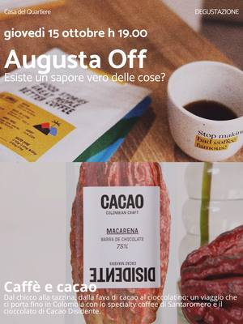
ven23ottDegustazioniVino e vino: degustazione di vini naturalivenerdì 23 ottobre, 19:00San Salvario (TO) · 7 €con Casa del Quartiere di San Salvario con Augusta Fiera del Vino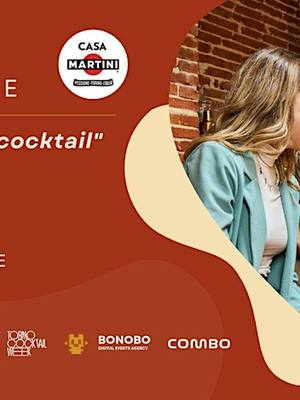
sab24ottDegustazioniMake your own cocktail: con Casa Martinisabato 24 ottobre, 15:00–18:00Aurora (TO) · Gratiscon Salone dell’Aperitivo con Casa Martini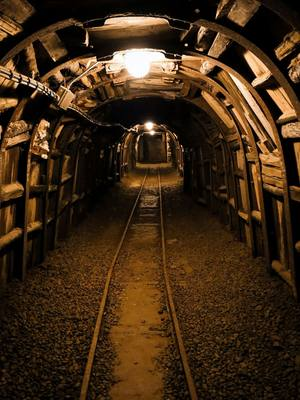
sab24ottDegustazioniVini in miniera: visita e degustazionesabato 24 ottobre, 15:15–21:00Prali (TO) · 75 € · esauritocon L’Autin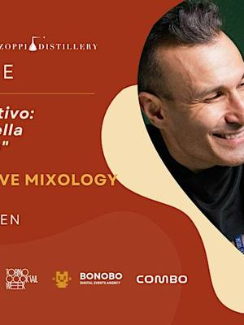
dom25ottDegustazioniCocktail torinesi: masterclass con Zoppidomenica 25 ottobre, 18:00–19:30Aurora (TO) · Gratiscon Salone dell’Aperitivo con Dennis Zoppi- lun26ottDegustazioniVini e sapori autunnali: degustazionelunedì 26 ottobre, 17:30–19:30Lingotto (TO) · 45 € · esauritocon Eataly Torino Lingotto
- ven30ottDegustazioniPalestra sensoriale: allenare il gustovenerdì 30 ottobre, 17:30–20:30Lingotto (TO) · 45 €con Eataly Torino Lingotto
- mer4novDegustazioniWine Club: giro del mondo in 4 bottigliemercoledì 4 novembre, 17:30–19:00Lingotto (TO) · 45 €con Eataly Torino Lingotto
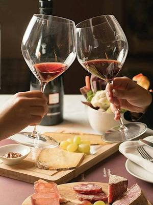
gio5novDegustazioniBarolo After Hours: aperitivo in enotecagiovedì 5 novembre, 17:00–19:30Lingotto (TO) · 18 €con Eataly Torino Lingotto con Fontanafredda- ven6novDegustazioniDegustazione: i vini di Stefano Rossottovenerdì 6 novembreIvrea (TO) · 20 €con ZAC! con Vini Stefano Rossotto
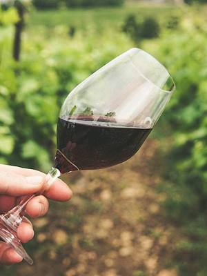
ven6novDegustazioniDegustazione di vino: le basivenerdì 6 novembre, 17:30–20:30Lingotto (TO) · 120 €con Eataly Torino Lingotto sab14novDegustazioniDegustazione di olio: conoscere l’oliosabato 14 novembre, 16:00–18:00Lingotto (TO) · 35 €con Eataly Torino Lingotto
sab14novDegustazioniDegustazione di olio: conoscere l’oliosabato 14 novembre, 16:00–18:00Lingotto (TO) · 35 €con Eataly Torino Lingotto- sab14novDegustazioniCioccolaTIAMO: degustazione per singlesabato 14 novembre, 16:30–17:30Torinocon Vitadasingle.net
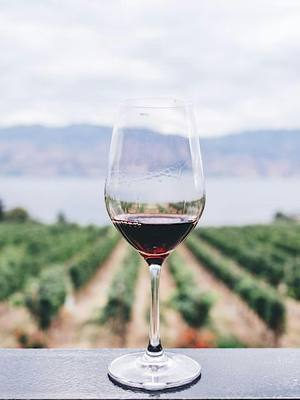
lun16novDegustazioniDegustazione di vino: l’approfondimentolunedì 16 novembre, 17:30–20:30Lingotto (TO) · 150 €con Eataly Torino Lingotto con Roberta Poloniato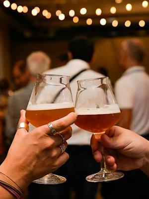
mar1dicDegustazioniDegustazione di birra: le birre di Natalemartedì 1 dicembre, 17:30–19:30Lingotto (TO) · 35 €con Eataly Torino Lingotto- ven4dicDegustazioniDegustazione: i vini di La Sourcevenerdì 4 dicembreIvrea (TO) · 20 €con ZAC! con La Source Winefarm
- ven4dicDegustazioniWine Club: i vitigni aromaticivenerdì 4 dicembre, 17:30–19:00Lingotto (TO) · 35 €con Eataly Torino Lingotto
- lun14dicDegustazioniBollicine fuori dagli schemi: degustazionelunedì 14 dicembre, 17:30–19:30Lingotto (TO) · 45 € · esauritocon Eataly Torino Lingotto
- lun21dicDegustazioniItalia segreta: vitigni quasi scomparsilunedì 21 dicembre, 17:30–19:30Lingotto (TO) · 45 €con Eataly Torino Lingotto
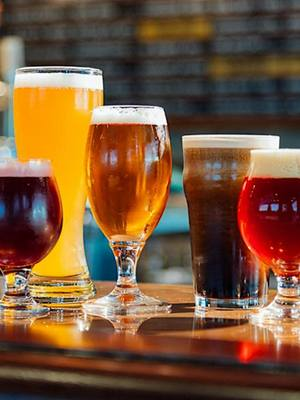
lun18genDegustazioniMaster Birra: degustazione di birrelunedì 18 gennaio, 17:30–19:30Lingotto (TO) · 120 €con Eataly Torino Lingotto- ven22genDegustazioniLe anime del Nebbiolo: degustazionevenerdì 22 gennaio, 17:30–19:30Lingotto (TO) · 45 €con Eataly Torino Lingotto
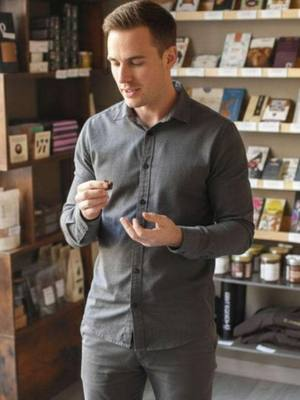
dataa sceltaDegustazioniDegustazione di cioccolato fineData a sceltaCentro (TO) · da 36 €con Chocolate7- dataa sceltaDegustazioniNegroni Experience: prepara il tuo cocktailData a sceltaPozzo Strada (TO) · da 45 €con Eccetera
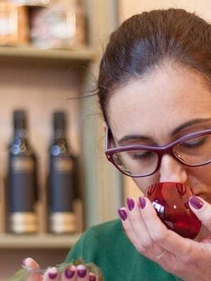
dataa sceltaDegustazioniDegustazione di olio, vino e formaggiData a sceltaCentro (TO) · da 56 €con L’Olio di Eva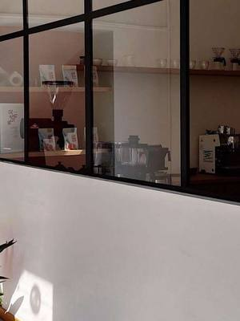
dataa sceltaDegustazioniDegustazione di caffè specialtyData a sceltaAurora (TO) · da 49 €con Santaromero Coffee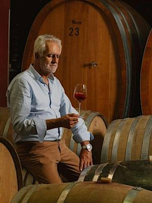
dataa sceltaDegustazioniVino e pietra: visita in cantina e assaggioData a scelta, 10:30Barge (CN) · da 25 €con L’Autin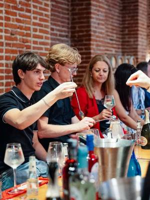
dataa sceltaDegustazioniMartini Cocktail Experience: mixologyOgni sabato e domenica, 15:30Chieri (TO) · da 39 €con Casa Martini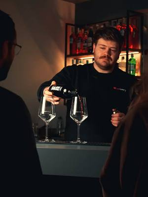
dataa sceltaDegustazioniDegustazione di vini piemontesiData a scelta, 18:00Centro (TO) · 34 €con Winelivery Bar & Enoteca- dataa sceltaDegustazioniDegustazione di vermouth in enotecaData a scelta, 18:30Centro (TO) · 34 €con Winelivery Bar & Enoteca